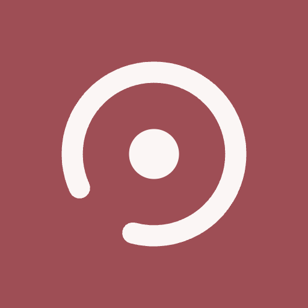
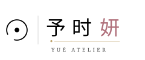

环 = 时（日）· 点 = 妍
六个资产文件已落盘在 assets/logo/，可直接进 H5：
symbol.svg（图形符号）· wordmark-h.svg（横版主标）· wordmark-v.svg（竖版）·
emblem.svg（圆形徽章）· seal.svg（繁体朱文印）· favicon.svg +
favicon-32.png / apple-touch-icon-180.png / icon-512.png。
本页所有 SVG 都是内联渲染（所见即文件内容）；唯一要注意的是第 04 节那个「以 <img> 加载」的对照格——
那是字体未转曲时的真实表现。
符号只用两个元素：一个左下开口的环，一个居中的实心点。三个字义各占一半——
「时」是那轮日（环），「妍」是那点妆（点），「予」是没有合拢这件事本身：环还开着，所以还在给予。
它是纯路径画的，不依赖任何字体——所以能缩到 16px 当 favicon，也能放到 6 米当门头，
不会因为客户机上没装字体而变形。这是整个 logo 系统里唯一 100% 自主的部分。
一个品牌不能只有一个 logo。下面五个是 H5 实际会用到的最小集合——每一个都有明确的出场位置， 不重叠、不互相替代。

三字直排是最单调的做法。下面 7 条是逐条叠加上去的，从「能看」到「有设计」差的就是这些。 第 4 条和第 5 条是我这次新加的——它们让字标从「排得整齐」变成「有笔意」。
字标最容易死在两个地方：深色底（细笔画消失）和照片上（背景吃掉对比度）。 下面是四套底材的真实表现，第 4 格是唯一的例外规则。
| 场景 | 最小尺寸 | 约束 |
|---|---|---|
| 横版主标 A | 宽 ≥ 120px | 低于 120px 时去掉金线与符号，只用三字 + 拉丁 |
| 竖版 B | 宽 ≥ 44px | 「时」「妍」为左右结构，签牌窄于 44px 会挤字 |
| 徽章 C | 直径 ≥ 56px | 低于 56px 时删掉环内文字，只留符号 |
| 印章 D | 高 ≥ 64px | 低于 64px 攻单字「妍」印 |
| 图标 E | 16px 起 | 必须用 favicon.svg（粗笔画版），不得用 symbol.svg 缩 |
| 安全留白 | 字高的 0.8× | 范围内不放任何其他元素 |
wordmark-h/v.svg 与 emblem.svg 里的汉字与拉丁是用 <text> + 网络字体渲染的
（symbol.svg 和 favicon.svg 已经是纯路径，不受影响）。
这么做的好处是参数可改、方便你继续调；代价是客户机上字体一旦不可用，字就会回退变形。
<img> 加载」的对照格就是字体没加载时的样子——现在看是好的，因为它读了 Google Fonts；
正式上线前用 Illustrator 或 FontForge「转换为轮廓」一次即可，之后它就是纯图形，任何环境都不会变。
currentColor（深色模式零成本）· 无额外请求 · 可单独给某个元素改色
<img> 的形态上次我给的是 A 妆造 · 婚礼与日常 / B 婚礼跟妆 · 订婚宴 · 孕亲照 · 日常妆。你说要更高级的—— 更高级的做法不是换词，是再砍一个词：「妆造」本身是行业词，一出现就把品牌往「店」上拉。 砍掉它，副标变成纯场景词，气质立刻不一样。
| 项 | 写法 | 说明 |
|---|---|---|
| favicon | <link rel="icon" href="assets/logo/favicon.svg"> | 现代浏览器走 SVG |
| favicon 兜底 | <link rel="icon" sizes="32x32" href="assets/logo/favicon-32.png"> | iOS Safari 不认 SVG favicon，必须给 PNG |
| iOS 主屏图标 | <link rel="apple-touch-icon" href="assets/logo/apple-touch-icon-180.png"> | 180×180，必须不透明背景（已满足） |
| 站点主标 | 内联 wordmark-h.svg | 导航 / Hero。内联才能吃 currentColor 与深色模式 |
| 水印 / 落款 | 内联 symbol.svg 或 seal.svg | 查看器水印用 symbol（无字，不干扰看图） |
| 社交分享图 | <meta property="og:image"> → 1200×630 | 待生成（用 emblem 居中 + 标语，我可以出） |
| 分享标题 | 予时妍 YUÉ ATELIER · 化妆师甜茉个人作品集 | 微信分享卡片用 |
<title>、Hero、关于页、分享文案、图注、水印——一律用 YUÉ，这一条我完全照办。
但有一个物理限制必须让你知道：域名与微信/小红书 ID 不允许非 ASCII 字符，
所以那些地方只能写 YUE（这不是设计取舍，是平台的字符集限制）。
换句话说：能展示的地方全用 É，能输入的地方全用 YUE——两者不是两套写法，是同一个名字的两种媒介形态。